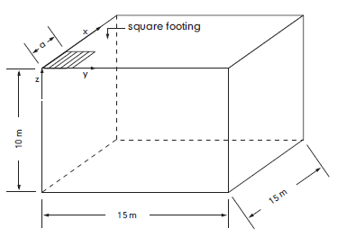
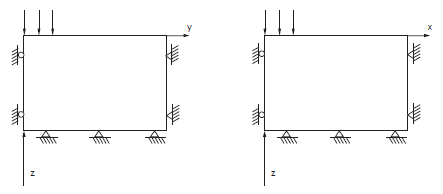
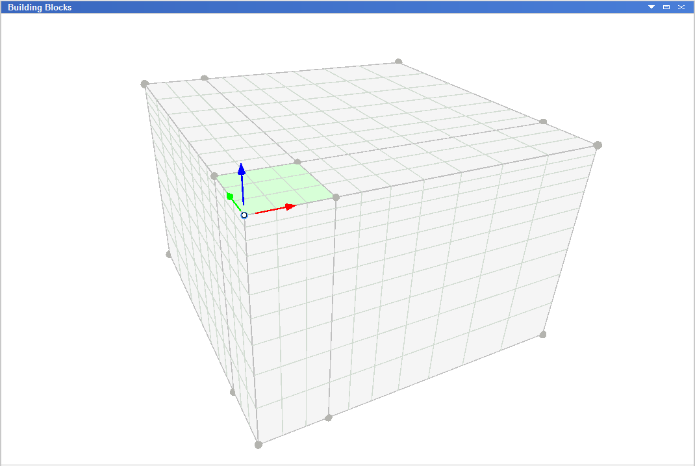
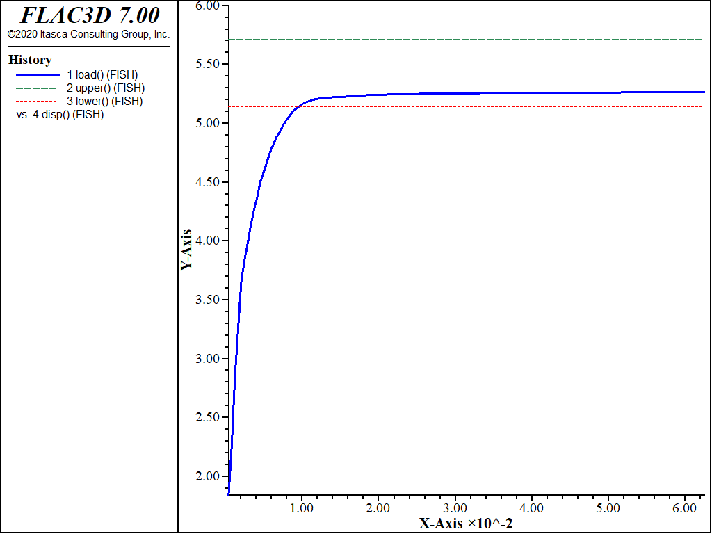
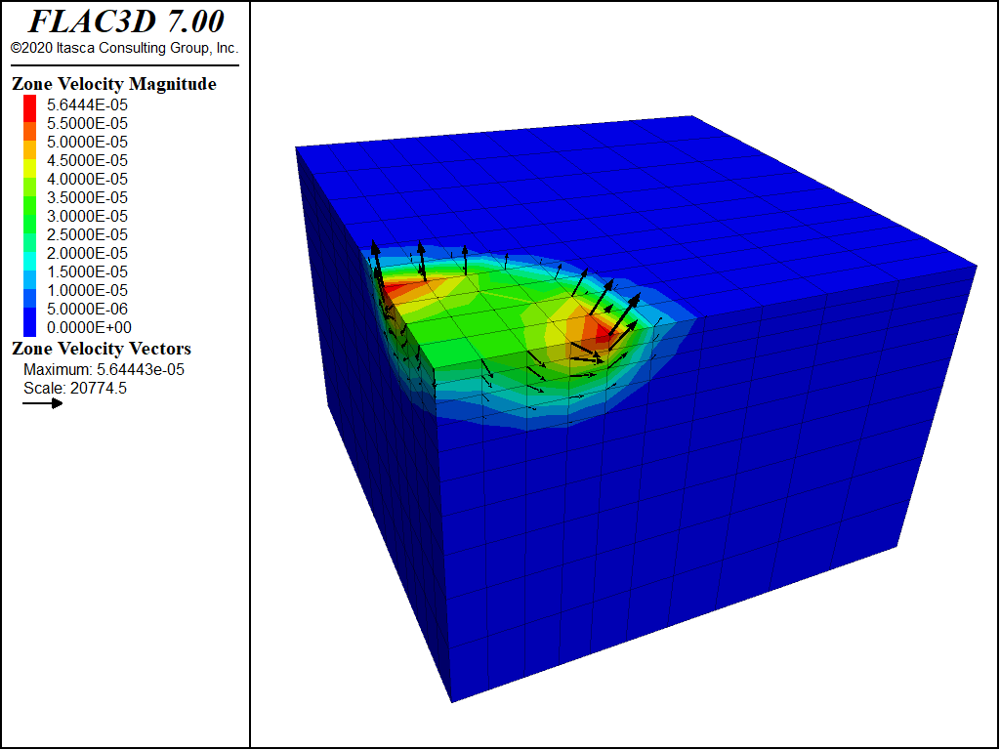
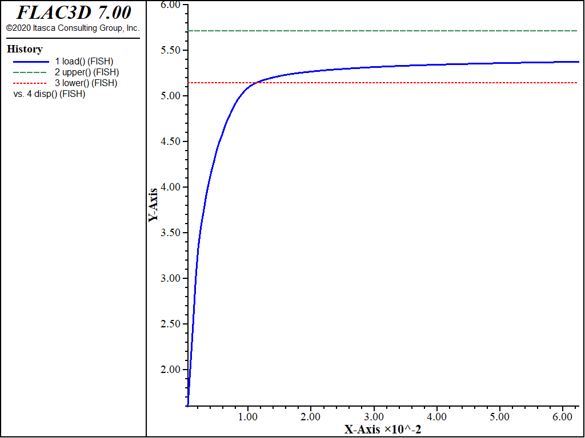
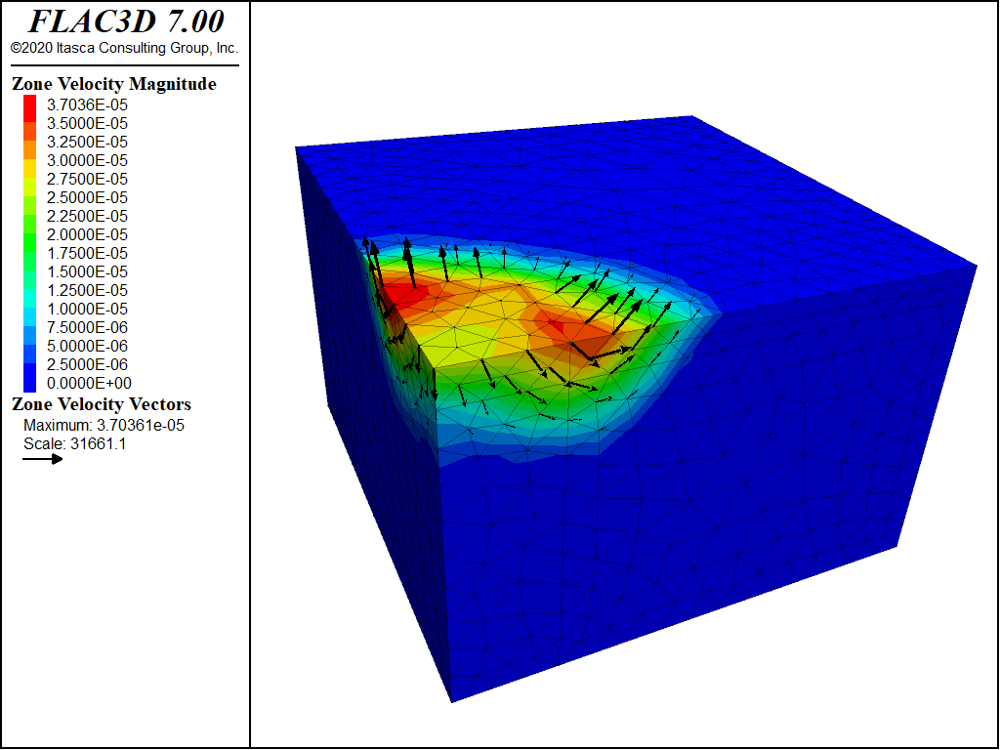

有黏聚力无摩擦材料上的光滑方形基础
问题描述
注意
本示例的工程文件可在 FLAC3D 中查看/运行。[1] 所使用的主数据文件（main data file）在本示例末尾给出。其余数据文件可在该工程中找到。
本问题涉及以数值方法确定有黏聚力无摩擦材料（Tresca 模型）上光滑矩形基础的承载力。
宽度为 2\(a\)、长度为 2\(b\) 的基础位于具有以下性质的弹塑性 Tresca 材料上：
| 剪切模量（\(G\)） | 0.1 GPa |
| 体积模量（\(K\)） | 0.2 GPa |
| 黏聚力（\(c\)） | 0.1 MPa |
| 摩擦角（\(\phi\)） | 0° |
| 剪胀角（\(\psi\)） | 0° |
上限解与下限解
该问题真为三维问题，虽然不存在精确解，但已将承载力 \(q\)（定义为破坏时的平均基底压力）的上、下限通过极限分析导出（例如见 Chen，1975）。采用 Shield 和 Drucker（1953）破坏机制得到的上限 \(q^u\) 具有如下形式
其中 \(c\) 为材料的黏聚力。下限 \(q^l\) 对应于条形基础的承载力，其值为
FLAC3D Model
在数值示例中，基础为方形，用半宽为 \(a\) 的区域表示（且 \(b\) = \(a\)）。利用 1/4 对称性，数值模拟中采用 15 m × 15 m × 10 m 的平行六面体域（如下图草图所示）。选取坐标系，其 \(x\) 轴和 \(y\) 轴位于基础的水平平面内，\(z\) 轴沿竖直方向向上。

图 1：FLAC3D 模拟的域——1/4 对称。
施加于该域的边界条件如下所示：

图 2：FLAC3D 分析的边界条件——1/4 对称。
远处 \(x\)、\(y\) 和 \(z\) 边界的位移在所有方向均受到约束，而对应于 \(x\) = 0 和 \(y\) = 0 平面的对称边界的位移分别在 \(x\) 和 \(y\) 方向受到约束。该板为光滑板：位移在 \(x\) 和 \(y\) 方向自由，并在 3 m × 3 m 区域内的网格点上沿 \(z\) 负方向施加速度，以模拟基础加载。
该域离散为 1000 个网格单元。代表基础的区域共覆盖 3 × 3 个网格单元。对于施加速度荷载的情形，假定承载面积延伸至最后一个施加速度的网格点与下一网格点之间距离的一半。于是，本模型中 \(a\) = 3.5 m、\(b\) = 3.5 m。
在基础范围以外，网格单元尺寸按几何级数（比例为 1.2）在 \(x\)、\(y\) 和 \(z\) 方向渐变，使用块体构建窗格完成（见图 3（Figure 3））。生成的命令通过状态窗格导出到数据文件“geometry.dat”。在基础范围内的节点上施加大小为 2.5 × 10-5 m/step 的速度，共 7500 个时步。
文件“footing-load.dat”中的 FISH 函数 load 计算归一化基础平均压力 \(p/c\)，以及其与理论归一化上限值 \(q^u/c\)（上文方程(1)）的相应相对差值。


图 3：FLAC3D 块体构建结果——1/4 对称。
结果与讨论
对应于数值模拟的荷载—位移曲线见图 4（Figure 4），其中 load 为归一化基础平均压力 \(p/c\)；上（upper） 和 下（lower） 为承载力的归一化上限值和下限值，位移（disp） 为基础中心处的归一化竖向位移 \(u_z/a\)。承载力的数值为 526 kPa。该值介于理论上限值 571 kPa 与下限值 514 kPa 之间。数值模拟结束时的速度场见图 5（Figure 5）。


图 4：荷载-位移曲线。


图 5：FLAC3D 速度场云图与速度矢量。
使用 FLAC3D 的节点混合离散（NMD）功能（文件“nmd.dat”）再次运行了同一问题。该模型使用文件“create-tet-mesh.dat”生成全四面体网格。图 6（Figure 6） 和 图 7（Figure 7） 给出了 NMD 结果，与图 4（Figure 4） 和 图 5（Figure 5）（全六面体网格的结果）直接对应。可以看出，结果非常相似。


图 6：荷载—位移曲线（NMD 结果）。


图 7：FLAC3D 速度场云图与速度矢量（NMD 结果）。
参考文献
Chen, W.-F. “Bearing Capacity of Square, Rectangular and Circular Footings,” in Limit Analysis and Soil Plasticity, Developments in Geotechnical Engineering 7, Ch. 7, pp. 295-340, New York: Elsevier Scientific Publishing Co. (1975).
Shield, R. T., and D. C. Drucker. “The Application of Limit Analysis to Punch-Indentation Problems,” J. Appl. Mech., 20, 453-460 (1953).
数据文件
SquareFooting.dat
;---------------------------------------------------------------------
; Tresca 材料上的光滑方形基础
; -关联塑性流动-
;---------------------------------------------------------------------
model new
model large-strain off
; 初始化参数
[global a = 3] ; 基础在 x 和 y 方向的尺寸
[global b = 3]
; 加载交互式创建的 Building Blocks 模板 geometry.f3dat
program call 'geometry'
; 按参数中的尺寸生成基础，并创建网格单元
building-blocks point move-to x [a] range group 'x'
building-blocks point move-to y [b] range group 'y'
zone generate from-building-blocks
; 分配本构模型和属性
zone cmodel assign mohr-coulomb
zone property bulk 2.e8 shear 1.e8 cohesion 1.e5
zone property friction 0. dilation 0. tension 1.e10
; 边界条件
zone face apply velocity-normal -2.5e-5 range group 'Footing'
zone face apply velocity-normal 0.0 range position-x 0
zone face apply velocity-normal 0.0 range position-y 0
zone face apply velocity (0,0,0) ...
range union position-x 15 position-y 15 position-z 0
; program call 调用计算基础荷载的 FISH 函数
program call 'footing-load'
; 记录若干历程
history interval 50
fish history load
fish history upper
fish history lower
fish history disp
model history mechanical ratio-local
; 循环至速度稳定
model cycle 7500
fish list [lower] [load] [upper]
fish list [errlo]
; 保存模型
model save 'sslab'
尾注
| [1] | 要在 FLAC3D 中查看该项目，请使用程序菜单。
⮡ FLAC |
⇐ Smooth Circular Footing on an Associated Mohr-Coulomb Material | Drained and Undrained Triaxial Compression Test on a Cam-Clay Sample ⇒
| 这些内容对您有帮助吗？… | FLAC3D © 2019, Itasca | 原文更新于 2020 年 10 月 8 日 |